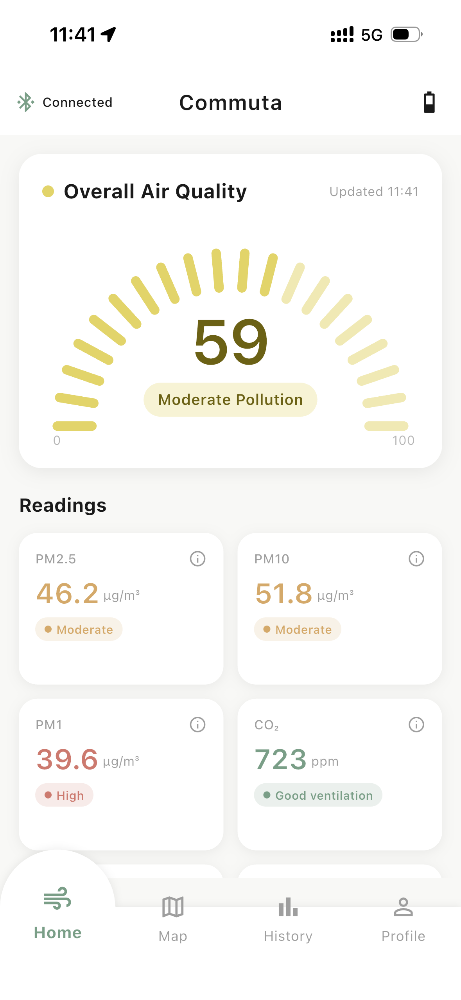
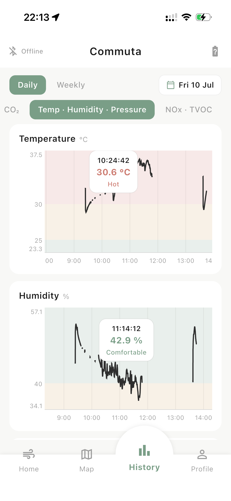
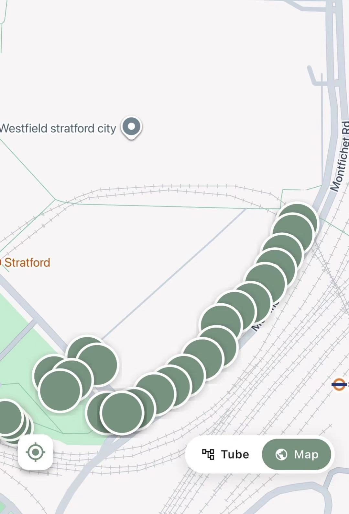

Your air, read back to you.
The Commuta companion app pairs with the device over Bluetooth and turns raw sensor readings into a picture of your daily exposure — live, historical, and mapped onto the journeys you actually took.
The Commuta app is in active development for the dissertation submission. The screenshots below describe the intended experience; features will land progressively before the final submission in August 2026.
What you're breathing, right now.
A live dashboard streams readings from the device in real time. DAQI-banded values make it obvious at a glance whether the air around you is clean, moderate, or something to worry about.

Each sensor gets its own reading card, colour-coded to the UK Daily Air Quality Index. Values update every ten seconds as new samples arrive from the device.
A summary band at the top gives an overall quality reading for the current moment, so you can tell whether it's a good time to be exactly where you are.
What you breathed yesterday.
Every sample is stored, so you can look back at any past journey and see how your exposure changed minute by minute.
History views chart each sensor over time. Zoom in on a single journey to see where the spikes happened, or zoom out to see how a whole week of commuting compares.
Daily and weekly summaries turn raw sample data into patterns you can act on.

Where the air was worst.
Readings are pinned to the GPS trace of your journey and matched to Underground stations along the way. Your commute becomes a route through air quality, not just through the city.

Plain-language explanations.
What each pollutant means
Every sensor reading links to a short explanation of what the pollutant is, where it comes from, and what concentrations to pay attention to.
DAQI bands, not just numbers
Values are grouped into the UK Daily Air Quality Index bands so you can read the air without having to memorise µg/m³ thresholds.
Route insight
Over time, you build a personal picture of which lines and stations expose you most, and whether an alternative would be measurably cleaner.